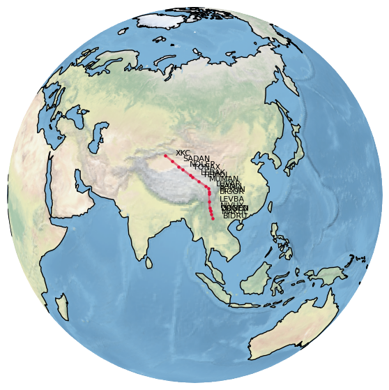

How to access beacons and airways information?
Air navigation and communication with air traffic control (ATC) is mostly based on the use of navigational beacons and airways. In recent years, airways tend to be replaced by Free Route Areas (FRA), but airways are still bound to exist in some parts of the world, Oceanic areas, mountainous areas, and free route navigation remains based on navigational beacons.
Navigational beacons (called navaids in the library) are of different types:
historically the first ones were attached to VOR equipment, but we can mostly
consider they are a name attached to geographic coordinates.
Basic data of questionable accuracy is provided with the library:
from traffic.data import airways, navaids
However, if other sources of data are configured (e.g. EUROCONTROL data files), the library will look into all sources (with the basic data source set as lowest priority)
VOR, DME and NDB are short-range radio navigation systems for aircraft. They help aircraft with a receiving unit to determine their position and stay on course.
The first airways were designed after the locations of these beacons. Recent progress in GNSS systems helped define more positions by their latitudes and longitudes, referred to as FIX.
Read more about navigational beacons and how FIX names are decided.
Read more about calibration of such equipment.
A (deprecated) database of world navigational beacons is available as:
>>> from traffic.data import navaids
Any navigational beacon can be accessed by the bracket notation:
>>> navaids['NARAK'] Navaid('NARAK', type='FIX', latitude=44.29527778, longitude=1.74888889)
Search for a navaid from all alternative data sources. :rtype:
None|Navaid>>> from traffic.data import navaids
>>> navaids.get("ZUE") Navaid('ZUE', type='NDB', latitude=30.9, longitude=20.068, altitude=0.0, description='ZUEITINA NDB', frequency='369.0kHz')
>>> navaids.extent("Switzerland").get("ZUE") Navaid('ZUE', type='VOR', latitude=47.592, longitude=8.817, altitude=1730.0, description='ZURICH EAST VOR-DME', frequency='110.05MHz')
Selects the subset of airways matching name in the name or description field. :rtype:
NavaidsWarning
The same name may match several navigational beacons in the world. Use the extent() method to limit the search to an area of interest.
>>> navaids.search("ZUE") name type latitude longitude altitude frequency description ━━━━━━━━━━━━━━━━━━━━━━━━━━━━━━━━━━━━━━━━━━━━━━━━━━━━━━━━━━━━━━━━━━━━━━━━━━━━━━━━━ ZUE NDB 30.9 20.07 0 369 ZUEITINA NDB ZUE VOR 47.59 8.818 1730 110 ZURICH EAST VOR-DME ZUE DME 47.59 8.818 1730 110 ZURICH EAST VOR-DME
>>> navaids.extent("Switzerland").search("ZUE") name type latitude longitude altitude frequency description ━━━━━━━━━━━━━━━━━━━━━━━━━━━━━━━━━━━━━━━━━━━━━━━━━━━━━━━━━━━━━━━━━━━━━━━━━━━━━━━━━ ZUE VOR 47.59 8.818 1730 110 ZURICH EAST VOR-DME ZUE DME 47.59 8.818 1730 110 ZURICH EAST VOR-DME
- class traffic.data.basic.airways.Airways(data=None)
An ATS route is a specified route designed for channelling the flow of traffic as necessary for the provision of air traffic services.
The term “ATS route” is used to mean variously, airway, advisory route, controlled or uncontrolled route, arrival or departure route, etc.
An ATS route is defined by route specifications which include an ATS route designator, the track to or from significant points (waypoints), distance between significant points, reporting requirements and, as determined by the appropriate ATS authority, the lowest safe altitude. (ICAO Annex 11 - Air Traffic Services)
A (deprecated) database of world ATS routes is available as:
>>> from traffic.data import airways
Any ATS route can be accessed by the bracket notation:
>>> airways['Z50'] Route('Z50', navaids=['EGOBA', 'SOT', 'BULTI', 'AYE', 'AVMON', ...])
>>> airways.extent((-0.33, 4.85, 42.34, 45.05))["UN869"] Route('UN869', navaids=['XOMBO', 'TIVLI', 'AGN', 'NARAK', 'NASEP', ...])
Note
The following snippet plots the (in)famous Silk Road Airway (L888) over the Himalaya mountains, which requires special qualifications.
import matplotlib.pyplot as plt from traffic.data import airways from cartes.crs import Orthographic with plt.style.context("traffic"): fig, ax = plt.subplots( figsize=(7, 7), subplot_kw=dict(projection=Orthographic(95, 30)), ) ax.stock_img() ax.coastlines() airways["L888"].plot( ax, linewidth=2, linestyle="solid", color="crimson" ) for navaid in airways["L888"].navaids: navaid.plot( ax, s=20, marker=".", color="crimson", text_kw=dict(fontsize=8) )
- search(name)
Selects the subset of airways matching name in the route name or in the passed navigational beacon.
>>> airways.extent('Switzerland').search("Z50") route id navaid latitude longitude ━━━━━━━━━━━━━━━━━━━━━━━━━━━━━━━━━━━━━━━━━━━━ Z50 7 GERSA 47.04 8.532 Z50 8 KELIP 46.96 8.762 Z50 9 SOPER 46.89 8.944 :rtype: :sphinx_autodoc_typehints_type:`\:py\:class\:\`\~traffic.data.basic.airways.Airways\``
Z50 10 PELAD 46.6 9.726 Z50 11 RESIA 46.48 10.04
>>> airways.search("NARAK") route id navaid latitude longitude ━━━━━━━━━━━━━━━━━━━━━━━━━━━━━━━━━━━━━━━━━━━━ N869 88 NARAK 44.3 1.749 UN859 15 NARAK 44.3 1.749 UN869 23 NARAK 44.3 1.749 UT122 15 NARAK 44.3 1.749 UY155 2 NARAK 44.3 1.749 UZ365 3 NARAK 44.3 1.749
Tip
The same L888 route can also be plotted inside a Leaflet widget.
from ipyleaflet import Map, basemaps
m = Map(center=(32.3, 99), zoom=4, basemap=basemaps.Stadia.StamenTerrain)
m.add(airways["L888"])
m